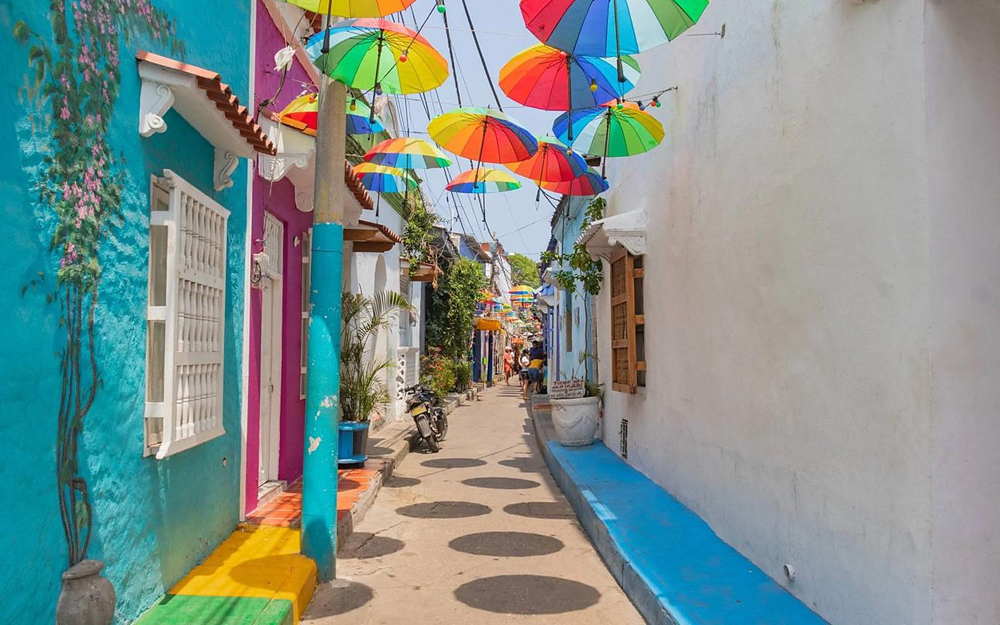
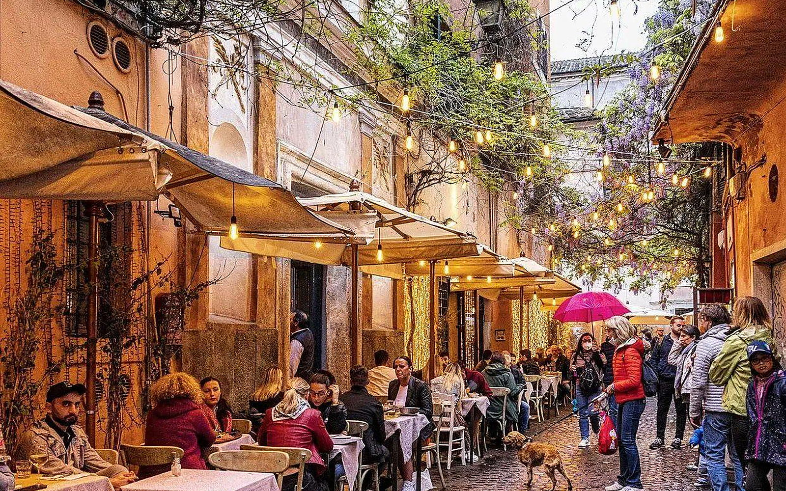

Vista de destino
Cartagena
Imagina explorar plazas, murallas y calles antes de llegar.
Cultura y experiencias inmersivas
Antes de viajar, descubre datos culturales y explora vistas panorámicas. En una versión futura, esta sección podrá integrar recorridos de 360 grados en lugares compatibles.
Explorar informaciónDatos básicos para entender mejor cada destino y respetar sus costumbres.
Consulta el idioma principal y frases útiles para visitantes.
Verifica la moneda local y el tipo de cambio antes de viajar.
Infórmate sobre normas de respeto en templos, barrios y espacios públicos.
| Destino | Dato cultural | Recomendación |
|---|---|---|
| Cartagena | Patrimonio histórico y cultura caribeña. | Respeta los espacios residenciales y consulta el clima. |
| Kioto | Templos, jardines y tradiciones locales. | Sigue las reglas de cada santuario y evita molestar a residentes. |
| Roma | Monumentos históricos y plazas públicas. | Consulta horarios de museos y normas de acceso. |
Una fotografía panorámica de 360° permite mirar alrededor moviendo el dispositivo o el cursor. Este ejemplo presenta la idea; una versión real requiere imágenes panorámicas adecuadas y una biblioteca compatible.

Imagina explorar plazas, murallas y calles antes de llegar.
Descubre arquitectura y espacios tradicionales.

Prepara una ruta de monumentos y plazas históricas.
Las fotografías de esta versión son imágenes ilustrativas enlazadas a fuentes externas. No representan necesariamente panoramas 360° ni un mapa en vivo.